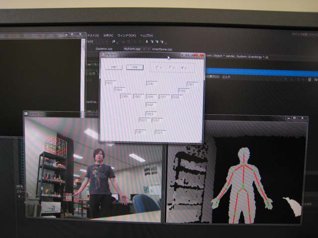

リサーチ
kinectを使った動作解析に関する研究
kinectは、もともとゲーム機（Xbox360）のコントローラーとして開発され、人物とその骨格を検出しジェスチャによってゲームを行うことを可能にしました。研究室ではkinectのもつ骨格検出を利用して、人物の動作解析を行います。具体的には関節の３次元位置情報をもとに、関節の動きを解析します。この研究は、正しい運動の仕方をリアルタイムでユーザーにフィードバックするアプリケーションなどへの応用が期待できます。図はkinectを使って骨格の追跡を行っているところです。

kinectによる骨格追跡の様子